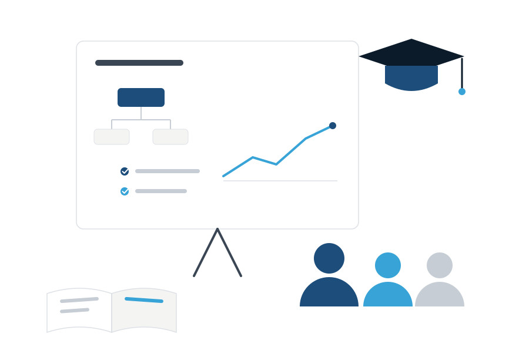

Обучение управлению: mini-MBA и Executive MBA
Система управления живёт, только если люди умеют ею пользоваться. Обучаем владельцев и управленческие команды системному управлению — не «про чужие кейсы» в аудитории, а на инструментах вашей собственной компании.

Кому и когда нужно управленческое обучение
Управлению почти никого не учили: и владельцы, и руководители обычно осваивают его «в бою» — дорогой ценой.
Владельцу, который строит систему
Вы внедряете инструменты управления и хотите понимать их логику сами — а не зависеть от консультантов.
Владельцу, который вышел из операционки
Нужны компетенции другого уровня: стратегия, финансы, контроль через показатели, работа с топ-командой.
Руководителям, выросшим из специалистов
Лучший продавец стал РОПом, инженер — начальником производства. Работать они умеют, управлять их никто не учил.
Команде в проекте систематизации
Чтобы система не откатилась после завершения проекта, команда должна понимать «зачем», а не только «что».
Преемнику или наследнику
Готовите сына, дочь или наёмного директора к передаче управления — нужна системная подготовка, а не «смотри, как я делаю».
Топ-команде после слияния
После M&A команды объединённых компаний должны заговорить на одном управленческом языке.
Четыре формата — под разные задачи
Обучение — часть нашей технологии внедрения, а не отдельный курс. Поэтому каждая программа привязана к реальным инструментам вашей компании.
Mini-MBA для владельцев
Компактная программа управленческой подготовки собственника: стратегия и целеполагание, оргструктура и ЦКП, финансовое планирование, управленческий ритм, управление через показатели.
Executive MBA
Углублённая программа для владельцев и генеральных директоров: корпоративное управление, стоимость бизнеса, M&A, советы директоров, работа с топ-командой.
Обучение управленческой команды
Руководители осваивают инструменты — планирование, статистики, координации, регламенты — прямо в процессе внедрения. Доступ к учебным материалам в личном кабинете.
Индивидуальная подготовка
Преемники, наёмные директора, ключевые руководители: персональная программа под конкретную задачу и уровень.
Ключевое отличие: учим не «вообще менеджменту», а работе с системой управления, которая внедряется или уже работает в вашей компании. Поэтому знания сразу становятся практикой.
Четыре шага — от диагностики до навыка
Диагностика компетенций
Определяем текущий уровень и разрыв: чему учить владельца, чему — команду.
Программа
Собираем программу под задачи компании: темы, форматы, темп, связка с проектом внедрения.
Обучение на своих инструментах
Каждая тема закрепляется практикой на материале вашей компании: не кейсы из учебника, а ваши цифры и процессы.
Закрепление
Сопровождаем применение: разборы, обратная связь, аттестация. Знание становится навыком.
Сроки и условия
Программы ведут лично партнёры ASM Strategy — Максим Юрин и Юрий Маракулин: 20+ лет управленческого опыта у каждого, собственные бизнесы и десятки проектов систематизации.
Частые вопросы об обучении
Чем это отличается от обычного MBA в бизнес-школе?
Классический MBA учит на чужих кейсах и в отрыве от вашего бизнеса. Мы обучаем на инструментах вашей компании: каждая тема сразу применяется в работе — поэтому знания не «испаряются» после выпускного.
Можно пройти обучение без проекта систематизации?
Да, программы работают и отдельно. Но максимальный эффект — в связке с внедрением: вы учитесь управлять системой, которую мы вместе строим в рамках систематизации.
Кто ведёт программы?
Партнёры ASM Strategy — Максим Юрин и Юрий Маракулин: более 20 лет управленческого опыта у каждого, собственные бизнесы и десятки проектов систематизации.
Обучение — это лекции?
Нет. Формат — рабочие сессии: короткая теория, затем применение на ваших данных, разбор и обратная связь. Соотношение примерно 30/70 в пользу практики.
Подберите программу под вашу задачу
Бесплатная встреча ~90 минут: определим разрыв в компетенциях и предложим программу — для вас лично или для всей управленческой команды.